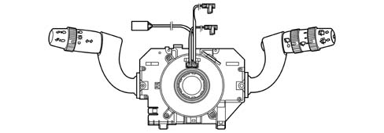
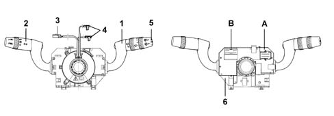
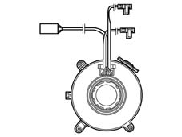
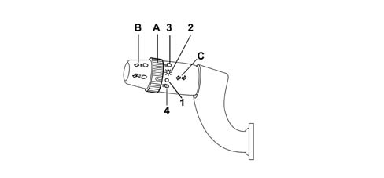
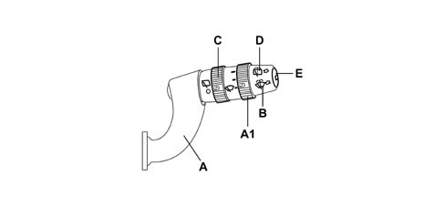
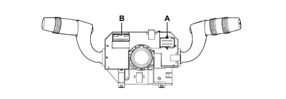
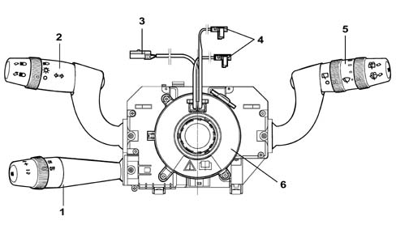

5550A stalk unit
- Path
- Descriptions > 55 ELECTRICAL EQUIPMENT > 5550 MANOEUVRING AND WARNING SIGNALS > 5550A stalk unit
- Kind
- system description
- Applies to
- all engines; all production periods
- Interactive page
- https://sloeber94.github.io/elrnDB-lYpsln/en/#/2427444
Applies to: all engines; all production periods
The steering column switch unit is illustrated in the diagram.

Applies to: all engines; all production periods
THE CASING
It is a part of the steering column switch unit containing the electrical circuits and the switching and automatic release mechanisms which return the left lever to the rest position once the steering wheel has been realigned.

1 - Right lever with front/rear wiper controls 2 - Left lever with lighting/direction indicator controls 3 - Horn/radio controls cable 4 - Airbag connectors 5 - Trip computer control button 6 - Internal electronic module A, B - Connectors
Applies to: all engines; all production periods
THE CASING
The front part of the CASING houses the CLOCK SPRING which provides the interface with the steering wheel.
The ELECTRONIC MODULE is connected to the CASING. The rear of the casing contains the housings for the electrical connectors.
Applies to: all engines; all production periods
ELECTRONIC MODULE
This is the electronic control unit which controls the wiping functions and is mechanically secured to the CASING to which it is electrically connected by means of special terminals.
It controls the operation of:
- Windscreen wiper: sweep rate
- Rear wiper: sweep rate and control linked to reverse engagement;
- Windscreen washer function: smart' washing';
- Rearscreen washer function:'Smart' washing ;
- Rain sensor (management of signal coming from sensor
Applies to: all engines; all production periods
CLOCK SPRING
.

Applies to: all engines; all production periods
CLOCK SPRING
It has two functions:
- to transmit the rotation of the steering wheel to the automatic release mechanism inside the CASING.
- to transfer the electrical signal for the controls on the steering column (horn and other optional serves) and connect the AIR-BAG module.
Applies to: all engines; all production periods
LEFT LEVER
It includes the lighting and direction indicator controls.
All the commands are activated via the lever or the ring nut at the end of the actual lever.

A - Main lights switch; (on ring nut) B - Control for main beams / flasher; (on lever) C - Control for direction indicators and lane change; (on lever)
Applies to: all engines; all production periods
MAIN LIGHTS SWITCH
This control is at the end of the lever and is activated by turning a special ring nut.
There are 3 stable positions for the ring nut when it is rotated in an anti-clockwise direction:
- Pos. 1 = No circuit switched on
- Pos. 2 = Side lights
- Pos. 3 = Side lights + go ahead for dipped/main beam headlamps + rear fog lamp.
- Pos. 4 = Side light and low beam Auto function
All the wheel manoeuvres are possible with the left lever in the dipped headlamps position, it should not be possible to make the above movements with the lever in the main beam headlamps position.
Applies to: all engines; all production periods
DIPPED/MAIN BEAM HEADLAMPS SWITCH
The operation is achieved by moving the lever perpendicular to the steering column (in other words lever moved from the rest position towards the dashboard).
The control has two positions, one UNSTABLE and one STABLE.
It is only possible to switch the dipped / main beam headlamps with the main lights switch (A) in position 3.
Applies to: all engines; all production periods
CONTROL FOR FLASHER - MAIN BEAM
This operated by pulling the lever from the rest position towards the centre of the steering wheel, the action is UNSTABLE as a result of which when the lever is released it returns to the rest position.
Applies to: all engines; all production periods
DIRECTION INDICATORS CONTROL
The direction indicators are operated by moving the lever on the steering wheel plane in two directions - clockwise and anti-clockwise.
The automatic release device intervenes for each STABLE position of the direction indicators and has the function of returning the lever to the rest position after the steering wheel has been realigned.
Applies to: all engines; all production periods
RIGHT LEVER
This includes the front and rear wiper controls. All the commands are activated via the lever or the ring nuts on the actual lever. There is also a button on the end of the lever which controls the trip computer functions 5560 INSTRUMENT PANEL.

A - Windscreen wiper operation; A1 - Windscreen wiper intermittent adjustment / Rain sensor sensitivity; B - Windscreen washer operation; C - Rearscreen wiper operation; D - Rearscreen washer operation; E - Trip computer control button
Applies to: all engines; all production periods
WINDSCREEN WIPER OPERATION
The operation is achieved by moving the lever on the steering wheel, there are 5 different positions:
Pos. 1 = Single sweep (UNSTABLE): ANTI-CLOCKWISE DIRECTION;
Pos. 2 = No circuit switched on (STABLE): REST POSITION;
Pos. 3 = Intermittent / Automatic (STABLE): CLOCKWISE DIRECTION;
Pos. 4 = 1ST SPEED continuous (STABLE): CLOCKWISE DIRECTION;
Pos. 5 = 2ND SPEED continuous (STABLE): CLOCKWISE DIRECTION;
Applies to: all engines; all production periods
WINDSCREEN WIPER INTERMITTENT ADJUSTMENT / RAIN SENSOR SENSITIVITY
This control is at the end of the lever and is operated by rotating a special ring nut in a clockwise direction in 4 stable positions corresponding to:
- BASIC TRIM LEVEL: from Pos. 1 to Pos. 4 = Increasing wiping frequency;
- DE-LUXE TRIM LEVEL: from Pos. 1 to Pos. 4 = Increasing rain sensor sensitivity;
Applies to: all engines; all production periods
ELECTRONIC MODULE (INCORPORATED IN STEERING COLUMN SWITCH UNIT)
This is the electronic control unit which controls the operation of the electric windscreen and rearscreen wiper motors and the washing functions.
In particular, it controls the operation of the:
- Windscreen wiper (stroke frequency for all trim levels);
- Rear wiper: sweep rate and control by reverse engagement;
- Windscreen washer function ('smart' washing for all versions);
- Rearscreen washer function ('smart' washing for all versions);
- Rain sensor: Management of signal coming from sensor
Applies to: all engines; all production periods
REAR WIPER CONTROL
This control is on the lever and is activated by turning a special ring nut.
The control has 2 STABLE positions and is turned in a clockwise direction:
- Pos. 1 = No circuit switched on;
- Pos. 2 = Rearscreen wiper activated;
All the instructions given for the operation of the windscreen wiper are valid.
Applies to: all engines; all production periods
REAR WASHER CONTROL
It is operated by pushing the lever towards the dashboard, the operation is UNSTABLE as a result of which when the lever is released it returns to the rest position.
The activation of the control involves the simultaneous operation of the rearscreen wiper with the 'smart washing' function (windscreen washer function).
Applies to: all engines; all production periods
STEERING COLUMN SWITCH UNIT ELECTRONIC MODULE PIN-OUT
Rear view

A - Connector A B - Connectors B/C
Applies to: all engines; all production periods
STEERING COLUMN SWITCH UNIT ELECTRONIC MODULE PIN-OUT
Connector A Pin Out
PIN | Operation |
|---|---|
relay | n.c. |
relay | A-bus serial line (signal from rain sensor) |
3 | Positive rearscreen wiper enablement signal from reverse |
4 | N.C. |
5 | Headlamp washer enablement positive signal |
6 | Negative signal from windscreen wiper motor cam |
7 | Power earth |
8 | Second windscreen wiper speed |
9 | First windscreen wiper speed |
10 | Two-way pump (rearscreen washer positive) |
11. | Rear wiper/pump power supply |
12. | Two-way pump (windscreen washer positive) |
Connector B/C pinout
PIN | Operation |
|---|---|
relay | Rearscreen wiper motor supply |
relay | Signal from rear wiper cam |
3 | Main beam headlamps negative control |
4 | Flasher negative control |
5 | Negative signal controlling right turn signal/parking lights |
6 | Negative signal controlling left turn signa/parking lights |
7 | Sidelight negative command |
8 | Dipped headlamps negative control |
9 | Signal earth |
10 | n.c. |
11. | Trip Computer function negative signal from SET button |
12. | Rearscreen wiper supply |
Applies to: all engines; all production periods
The engine managment systems for petrol engines with motorized throttles and diesel engines with electronically controlled injection times include the Cruise Control function, i.e. a system which automatically maintains the cruising speed set by the driver.

1 - Cruise Control lever 2 - Lights/direction indicators lever 3 - Horn/radio controls cable 4 - Air Bag connectors 5 - Front/rear wiper control stalk 6 - Clock spring
Applies to: all engines; all production periods
The Cruise Control lever is integrated in the steering column switch unit, the third lever incorporates the following controls:
- a switch with a ring nut for activating/deactivating the Cruise Control;
- a switch with a ring nut with the function of memorizing the vehicle speed increase/decrease;
- a Resume button for recalling the memorised speed.